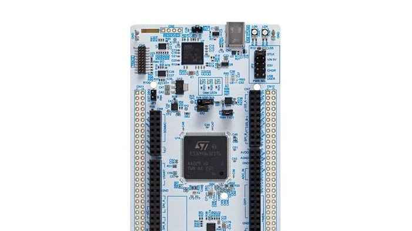
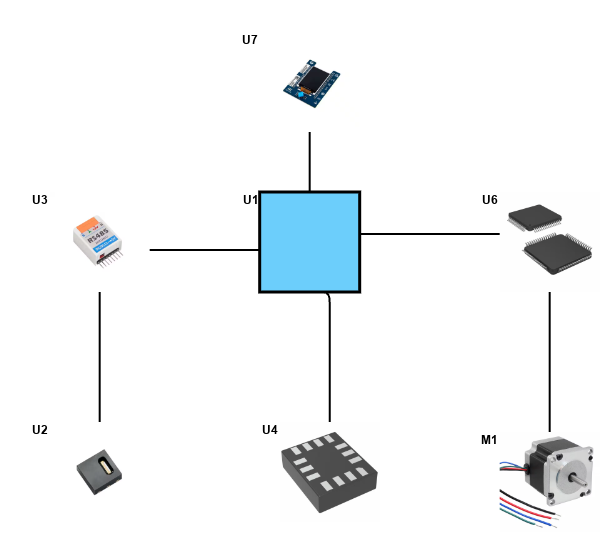
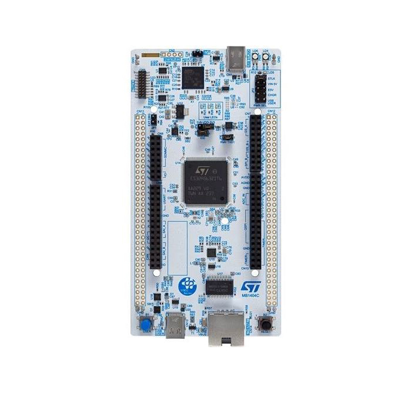
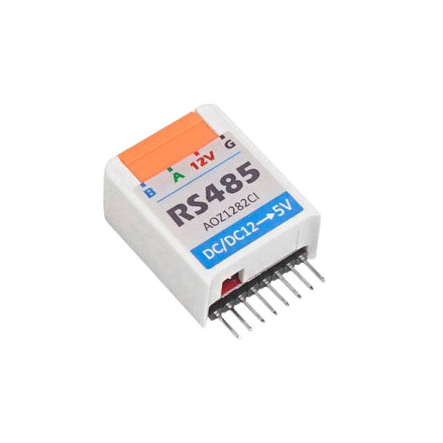

基于STM32H5的工业传送带控制创意设计
1. 创意方案及介绍
1.1 功能与特性
系统主要的设计目的：提供高效工业解决方案，旨在通过实时数据采集，实时监控电机的运行状态来预防故障和减少停机时间。系统能够实时监测电机的关键性能指标，包括振动、温度等，确保数据的及时性和准确性。同时，通过高精度的传感器，系统可以采集电机的运行数据，并将这些数据存储在本地，以便后续分析和处理。将收集到的数据利用NANOEDGE AI技术，系统可以对采集到的数据进行深入分析，预测电机可能出现的故障，提前发现潜在问题。系统采用TOUCHGFX技术提供直观的用户界面，使得操作者能够轻松理解多个电机的状态，提高了操作效率和用户体验。
本系统设计具有良好的可扩展性，可以方便地增加新的传感器或功能模块，以满足不同应用场景的需求。
1.2 应用领域
系统能够应用于工业传动电机异常检测，主要应用于制造业和物流仓储中，本系统可以帮助工厂实时监测电机状态，预测潜在故障，避免生产线停工。同时也可以提升物流效率，减少维护成本。
1.3 主要技术特点
电机作为工业生产领域的核心部件，主要应用于工业传动等关键部位，价格占整机成本30%以上，电机一旦发生故障，会导致整个机械系统运行受到影响甚至崩溃停机，因此做好电机的状态检测是目前亟需解决的问题。本作品是一款用于传送带电机检测的设计，系统由调度控制器等组件构成，采用STM32H5作为主控，配合振动传感器，实现实时监测
2. 方案框图及介绍
如图：主控板链接RS485以和SHT20通信，使用GFX02Z1以显示UI交互信息；通过控制TB6600的PWM来控制步进电机转速，通过采集震动传感器的加速度值，并使用NANOEDGE AI来监测电机。
Scheme-it工具介绍
Scheme-it工具提供了许多模板，并且操作非常方便，只需要在网页上直接拖动即可。最大的亮点在于无需安装，只需登录网页即可开始使用。
Scheme-it还附带了一个符号库，其中包含超过700个通用符号，方便用户进行图形化设计。而且，Scheme-it与Digi-Key元件目录相连，用户可以直接访问超过400万种元件，进一步方便了设计和元件的选择。
Scheme-it是一个功能强大且易于使用的在线工具，它提供了丰富的模板和符号库，同时与Digi-Key元件目录连接，为用户提供了便捷的设计资源和选择。对于初次尝试使用的用户来说，Scheme-it无疑是一个很好的选择。
3. 方案中用到的指定厂商元器件介绍
1.STM32H563（厂商：意法半导体）
LQFP144或TFBGA225封装中的STM32微控制器
- 3个用户LED
- 2个用户和重置按钮
- 32.768 kHz晶体振荡器
- 板连接器：
- SWD
- ST Zio扩展连接器，包括ARDUINO®Uno V3
- ST morpho扩展连接器
- 灵活的电源选项：ST-LINK USB VBUS、USB连接器或外部电源
- STM32Cube MCU包提供全面的免费软件库和示例
- 支持多种集成开发环境（IDE），包括IAR Embedded Workbench®、MDK ARM和STM32CubeIDE
2.RS485 HAT (厂商:M5Stack)
RS485 HAT是一款兼容M5SticKC的RS485转换器.内部集成SP485EEN,主要部分由一个485自动收发器电路和一个DC-DC降压电路组成（可以将输入电压降至5V）
RS485是一种标准,用于定义串行通信系统的驱动器和接收器的电气特性,广泛用于工业领域。 支持多点系统.
该产品用于将TTL标准转换为RS485标准。 如果外部串行设备是RS485标准,可以通过该模块实现TTL转换RS485协议的实现设备之间的通信.
4. 心得体会
参与电机异常检测系统的开发或应用过程，不仅是一次技术上的探索，更是对系统思维、问题解决能力以及跨学科知识融合的一次深刻体验。在项目初期，深入理解电机的应用场景、工作条件以及用户对异常检测系统的具体需求至关重要。同时也感谢得捷电子和硬禾课堂提供的帮助与支持。